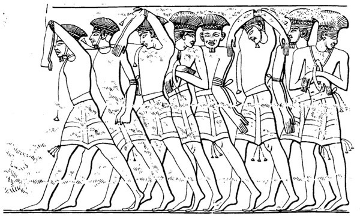
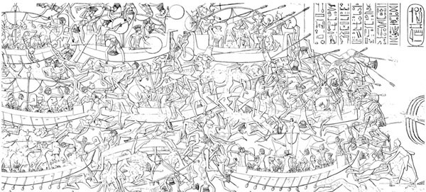

I guerrieri fecero la loro apparizione sulla scena del mondo e si eclissarono rapidamente, lasciando morte e distruzione al loro passaggio. Gli studiosi moderni hanno inventato per loro la definizione collettiva di «Popoli del Mare», ma gli Egizi, che hanno trascritto la cronaca del loro attacco all’Egitto, hanno invece identificato gruppi separati che agivano di concerto: i Peleset, i Tjekker, i Shekelesh, i Shardana, i Danuna e i Weshesh; nomi dall’accento straniero per genti che avevano le sembianze di stranieri.1
A prescindere dalle testimonianze degli Egizi, di loro sappiamo pochissimo. Non abbiamo alcuna certezza dell’origine dei Popoli del Mare: se ci si basa su una delle possibili ipotesi, forse provenivano dalla Sicilia, dalla Sardegna e dall’Italia, oppure dal Mar Egeo o dall’Anatolia occidentale, o addirittura da Cipro e dal Mediterraneo orientale.2 Non si è stati in grado di identificare nessun sito antico che segnasse il loro punto di partenza o di arrivo. Pensiamo che si spostassero continuamente da un luogo all’altro, invadendo al loro passaggio paesi e regni. Secondo i testi egizi, si installarono in Siria prima di scendere sulla costa di Canaan (che comprende una parte dell’odierna Siria, del Libano e di Israele) e intorno al delta del Nilo in Egitto.
Era il 1177 a.C. Correva l’ottavo anno del regno del faraone Ramses III.3 Secondo gli antichi Egizi e secondo le più recenti prove archeologiche, alcuni Popoli del Mare provenivano dalla terra, altri dal mare.4 Non c’è traccia di uniformi né di utensili. Antiche illustrazioni rappresentano un gruppo con copricapo piumato e un drappello che sfoggia turbanti, altri ancora indossavano elmetti muniti di corna o andavano a capo scoperto. Alcuni portavano barbe appuntite e altri si vestivano con corti gonnelli, a torso nudo oppure con una tunica, altri erano privi di barba e baffi e indossavano abiti più lunghi. Da queste osservazioni si deduce che i Popoli del Mare comprendevano gruppi diversi, provenienti da zone geografiche diverse e da culture differenti. Armati di affilate spade di bronzo, di aste di legno con punte di metallo sfavillante e di archi e frecce, veleggiavano a bordo di navi o si spostavano su carri e bighe. Anche se il 1177 a.C. è la mia data chiave, sono consapevole del fatto che gli invasori giunsero a ondate successive nel corso di un lungo periodo. A volte i guerrieri arrivavano soli, altre volte erano accompagnati dalle famiglie.

Figura 2
I Popoli del Mare raffigurati come prigionieri a Medinet Habu
(da Medinet Habu, vol. 1, fig. 44. Per gentile concessione dell’Oriental Institute dell’Università di Chicago).
Secondo le iscrizioni di Ramses, nessun paese fu in grado di opporsi all’invasione di questa massa di uomini. La resistenza era inutile. Le grandi potenze dell’epoca – gli Ittiti, i Micenei, i Cananei, i Ciprioti e altri – caddero l’una dopo l’altra. Alcuni riuscirono a sfuggire al massacro, altri non poterono far altro che ammassare le rovine delle loro città, un tempo floride, altri ancora si unirono agli invasori e ne ingrossarono le fila, aggiungendo complessità all’orda di migranti. Forse era il desiderio di bottino o di schiavi ad attirarne alcuni; altri si trovarono costretti dalle pressioni di altre popolazioni a prendere la strada dell’Oriente partendo dalle loro terre occidentali.
Sulle pareti del suo tempio, a Medinet Habu, vicino alla Valle dei Re, Ramses dichiara:
I paesi stranieri hanno organizzato una cospirazione nelle loro isole. Immediatamente le terre sono state eliminate e le genti disperse nella mischia. Nessun paese era in grado di resistere di fronte alle loro armi, da Khatti, Qode, Karkemish, Arzawa e Alashiya si veniva [subito] eliminati. [Fu allestito] un accampamento in una località a Amurru. Costernavano la loro popolazione e la loro terra non era mai stata in un simile stato. Andarono verso l’Egitto, mentre di fronte a loro era posta la barriera del fuoco. La loro confederazione era Peleset, Tjekker, Shekelesh, Danuna e Washesh, paesi tra loro uniti. Misero mano su queste terre in tutto il perimetro conosciuto, con il cuore fiducioso e pieno di speranza.5
Sappiamo che queste località furono conquistate dagli invasori, perché nell’antichità erano famose. Khatti è la terra degli Ittiti, situata sull’altopiano interno dell’Anatolia (l’antico nome della Turchia), vicino alla moderna Ankara, e il suo impero si estendeva dalla costa egea a ovest fino alle regioni della Siria settentrionale a est. Qode è probabilmente situata in quella che è ora la Turchia sud-orientale. Karkemish è un noto sito archeologico, dove sono stati compiuti i primi scavi almeno un secolo fa, da un’équipe di archeologi tra i quali vi erano Sir Leonard Wooley, più conosciuto per i suoi scavi nella «Ur dei Caldei» di Abramo, in Iraq, e T.E. Lawrence, che ebbe una formazione di archeologo classico a Oxford prima delle sue imprese leggendarie durante la Prima guerra mondiale, dopo la quale divenne il «Lawrence d’Arabia» celebrato da Hollywood. Arzawa era una terra familiare agli Ittiti, situata come avamposto dell’Anatolia occidentale. Alashiya potrebbe essere l’attuale isola di Cipro, ricca di metalli, famosa per i suoi giacimenti di rame. Amurru era situata sulla costa della Siria settentrionale. Visiteremo una per una tutte queste località in un secondo tempo, raccontando le loro storie.
I sei specifici gruppi etnici che hanno costituito i Popoli del Mare durante questa ondata di invasioni (i cinque gruppi citati sopra da Ramses nell’iscrizione di Medinet Habu e un sesto gruppo chiamato Shardana, citato in un’altra importante iscrizione) hanno origini assai più oscure delle terre da loro conquistate. Non hanno lasciato iscrizioni proprie e, dal punto di vista testuale, sono noti quasi esclusivamente in base alle epigrafi egizie.6
Gran parte di questi gruppi, inoltre, non ha riscontro archeologico, malgrado i molti sforzi di archeologi e filologi del secolo scorso per decifrarne le tracce linguistiche e poi, più recentemente, nell’esame di vasellame, terrecotte e altri resti archeologici. I Danuna, ad esempio, sono stati a lungo identificati con i Danai di Omero, un popolo dell’Età del Bronzo dell’Egeo. Si pensa che i Shekelesh provenissero dalla Sicilia e i Shardana dalla Sardegna, basandosi in parte sulle somiglianze consonantiche delle due parole, in parte sulle iscrizioni di Ramses, che li definisce «popoli stranieri» che fecero una cospirazione «nelle loro isole» (i Shardana, in particolare, nelle iscrizioni di Ramses sono chiamati gente «del mare»).7
Tuttavia non tutti gli studiosi accettano queste indicazioni ed esiste un’intera scuola di pensiero che suggerisce che i Shekelesh e i Shardana non provenissero dal Mediterraneo occidentale, ma fossero originari del Mediterraneo orientale. Forse giunsero in Sicilia e in Sardegna in un secondo tempo, dando il loro nome a queste terre solo dopo essere stati sconfitti dagli Egizi. Conforta questa tesi il fatto che si sa che i Shardana lottarono sia a fianco sia contro gli Egizi, molto prima dell’arrivo dei Popoli del Mare. La smentisce invece l’iscrizione di Ramses III, il quale afferma di aver insediato proprio in Egitto i sopravvissuti dell’esercito invasore.8
Di tutti i gruppi stranieri attivi sulla scena, solo uno è stato identificato con certezza. I Peleset dei Popoli del Mare coincidono quasi senza dubbio con i Filistei, che, secondo la Bibbia, provenivano da Creta.9 L’identificazione linguistica sembra ovvia, tanto più che Jean-François Champollion, colui che decifrò i geroglifici egizi, lo aveva già ipotizzato prima del 1836, e la tendenza a considerare di provenienza «filistea» gli stili di terrecotte, l’architettura e gli altri resti archeologici era già iniziata nel 1899, con gli esponenti dell’archeologia biblica che lavoravano a Tell es-Safi, il sito biblico di Gath.10
Anche se non sappiamo con precisione né le origini né le motivazioni degli invasori, conosciamo invece il loro aspetto; vediamo i loro nomi e i loro volti sulle pareti del tempio mortuario di Ramses III a Medinet Habu. Questo antico sito è ricco di pitture murali e contiene una serie impressionante di testi geroglifici. In queste rappresentazioni sono visibili con chiarezza le armature degli invasori, le loro armi, gli abiti, le imbarcazioni e i carri trainati da buoi, carichi di merci: sono immagini talmente dettagliate che gli studiosi hanno addirittura pubblicato analisi sui singoli individui e sulle imbarcazioni raffigurate in queste scene.11 Ci sono anche scenari più drammatici. Uno mostra stranieri ed Egizi impegnati in una caotica battaglia navale; alcuni soldati galleggiano a fior d’acqua, ormai cadaveri, mentre altri combattono coraggiosamente dalle loro imbarcazioni.
Sin dagli anni venti del Novecento, le iscrizioni e le scene di Medinet Habu sono state studiate e copiate scrupolosamente dagli egittologi dell’Oriental Institute dell’Università di Chicago. L’istituto era, ed è ancora, uno dei centri più importanti al mondo per lo studio delle civiltà antiche dell’Egitto e del Medio Oriente. James Henry Breasted lo aveva fondato al suo ritorno da un epico viaggio in Medio Oriente nel 1919 e nel 1920, con cinquantamila dollari di capitale iniziale offerti da John D. Rockefeller Jr. Gli archeologici dell’OI (acronimo di Oriental Institute) hanno da allora compiuto scavi in tutto il Medio Oriente, dall’Iran all’Egitto e oltre.

Figura 3
La battaglia navale contro i Popoli del Mare a Medinet Habu
(da Medinet Habu, vol. 1, fig. 37. Per gentile concessione dell’Oriental Institute dell’Università di Chicago).
Molto è stato scritto su Breasted e sul progetto OI, che esordì sotto la sua guida con gli scavi di Megiddo (l’Armageddon biblica) in Israele, dal 1925 al 1939.12 Tra i lavori più significativi ci sono le indagini epigrafiche condotte in Egitto, dove gli egittologi hanno faticosamente ricopiato i testi geroglifici e l’iconografia dei templi e dei palazzi dei faraoni in tutto il territorio. Trascrivere i geroglifici scolpiti sulle mura di pietra e sui monumenti è un lavoro monotono ed estenuante. Comporta ore di fatica, e i trascrittori di solito rimangono sotto il sole cocente, appollaiati su lunghe scale o sospesi su impalcature, concentrati su simboli molto deteriorati scritti su portali, templi e colonne. Ma i risultati sono inestimabili, soprattutto dopo che molte delle iscrizioni hanno subito danni a causa delle erosioni o dell’incuria dei turisti. Se queste iscrizioni non fossero state trascritte, inevitabilmente per le generazioni future sarebbero andate perdute. I risultati delle trascrizioni di Medinet Habu sono stati pubblicati in una serie di volumi, il primo dei quali è stato dato alle stampe nel 1930 e i successivi negli anni quaranta e cinquanta del Novecento.
Anche se il dibattito accademico rimane acceso, la maggioranza degli esperti concorda sul fatto che le battaglie per terra e per mare dipinte sulle pareti di Medinet Habu furono con ogni probabilità combattute quasi contemporaneamente in tutto il delta egiziano e nelle regioni circostanti. È possibile che rappresentino un’unica grande battaglia, che avvenne sia per mare sia per terra. Alcuni studiosi hanno suggerito che si trattasse di imboscate ai danni dell’esercito dei Popoli del Mare, colti di sorpresa dagli Egizi.13 In ogni caso, l’esito finale non è in discussione. A Medinet Habu il faraone egizio dice con chiarezza:
Raggiunsero forse la frontiera delle mie terre, ma non il loro seme, e i loro cuori e le loro anime sono finiti per sempre e definitivamente. Coloro che vennero insieme al di là del mare avevano una fiamma abbacinante davanti a loro alla foce del fiume, e un’intera barriera di lance li circondava sulla riva. Furono trascinati sulla spiaggia, accerchiati e ridotti alla prostrazione, uccisi e ridotti a brandelli dalla testa ai piedi. Le navi si inabissavano e le merci cadevano in acqua. Feci in modo che queste terre evitassero (perfino) di citare l’Egitto: perché quando pronunciano il mio nome nelle loro terre, vengono bruciati all’istante.14
In un famoso documento noto come «papiro Harris», Ramses continua, nominando i suoi nemici sconfitti:
Ho sconfitto coloro che li hanno invasi dalle loro terre. Ho ucciso i Danuna [che sono] nelle loro isole, i Tjekker e i Peleset furono inceneriti. I Shardana e i Weshesh del mare furono trasformati in coloro che non esistono, presi prigionieri, portati in Egitto come schiavi, come la sabbia della riva. Li ho insediati in baluardi legati al mio nome. Numerose erano le loro classi come centomila. Ho tassato ogni anno tutti loro, in stoffa e cereali dai magazzini e granai.15
Non era la prima volta che gli Egizi combattevano contro un esercito collettivo di «Popoli del Mare». Trent’anni prima, nel 1207 a.C., durante il quinto anno del regno del faraone Merenptah, un’analoga coalizione formata da questi gruppi di origine sconosciuta aveva già attaccato l’Egitto.
Agli studiosi dell’antico Medio Oriente, Merenptah è noto soprattutto come il faraone che per primo utilizzò il termine «Israele» in un’iscrizione, risalente allo stesso anno (1207 a.C.). Questa iscrizione è il primo contesto in cui viene citato il nome di Israele fuori dalla Bibbia. Nell’epigrafe faraonica, il nome, scritto con un segno speciale per indicare che si tratta di un popolo e non di un luogo, appare nella breve descrizione di una campagna militare nella regione di Canaan, dove era stanziato il popolo che egli chiama «Israele».16 Le frasi in questione fanno parte di una lunga iscrizione che descrive le battaglie di Merenptah contro i Libici, che vivevano a occidente dell’Egitto. A concentrare quell’anno l’attenzione di Merenptah erano stati più i Libici e i Popoli del Mare, dunque, che non gli Israeliti.
In un testo trovato nel sito di Eliopoli, datato «Anno 5, secondo mese della terza stagione (decimo mese)», viene detto: «Lo sciagurato capo della Libia ha invaso [con i] Shekelesh e ogni paese straniero che è con lui, per violare le frontiere dell’Egitto».17 La stessa dicitura è ripetuta in un’altra iscrizione, nota come «la colonna del Cairo».18
In un’iscrizione più lunga, trovata a Karnak (l’attuale Luxor), sono forniti ulteriori dettagli su questa prima ondata di incursioni da parte dei Popoli del Mare. Sono inclusi i nomi di gruppi specifici:
[Iniziando dalla vittoria che sua maestà ha ottenuto nella terra di Libia] Eqwesh, Teresh, Lukka, Shardana, Shekelesh, Popoli del nord che provengono da tutte le terre ... la terza stagione, dicendo: Lo sciagurato, decaduto capo della Libia ... è piombato sul paese di Tehenu con i suoi arcieri Shardana, Shekelesh, Eqwesh, Lukka, Teresh, che hanno preso il meglio di ogni guerriero e ogni uomo del suo paese...
Ecco una lista di prigionieri di queste terre di Libia e dei popoli che il capo della Libia portò con lui:
Sherden, Shekelesh, Eqwesh delle terre del mare, che non hanno prepuzio;
Shekelesh, 222 uomini
Il che crea 250 mani
Teresh 742 uomini
il che crea 790 mani
Shardana –
[Il che crea]
[Ek]wesh che non hanno prepuzio, ammazzati, le cui mani furono mozzate (perché) essi non hanno [prepuzio]
Shekelesh e Teresh che vennero come nemici dalla Libia
Kehek e Libici che portarono 218 uomini come prigionieri viventi.19
In queste iscrizioni sono evidenti numerosi elementi. Innanzitutto cinque gruppi, anziché sei, hanno costituito questa prima ondata di Popoli del Mare: i Shardana (o Sherden), i Shekelesh, gli Eqwesh, i Lukka e i Teresh. I Shardana e i Shekelesh parteciparono a quest’invasione e anche a quella avvenuta durante il regno di Ramses III, ma per gli altri tre gruppi le cose andarono diversamente. Inoltre, i Shardana, i Shekelesh e gli Eqwesh sono identificati come «provenienti dai paesi del mare», mentre i cinque gruppi complessivamente sono considerati «popoli del nord che provenivano da tutte le terre». Quest’ultimo fattore non sorprende, perché la maggioranza delle terre con cui i nuovi regni egiziani erano in contatto (tranne la Nubia e la Libia) si trovavano a nord dell’Egitto. Il fatto di definire i Shardana e i Shekelesh «Popoli del Mare» rinforza invece l’idea che possano essere collegati rispettivamente a Sardegna e Sicilia.
Il fatto che gli Eqwesh provenissero dalle «terre del mare» ha spinto alcuni studiosi a identificarli con gli Achei di Omero, cioè i Micenei dell’Età del Bronzo della Grecia continentale, che Ramses III due decenni prima, nelle sue iscrizioni sui Popoli del Mare, identificava forse con i Danuna. Per quanto riguarda gli ultimi due nomi, gli studiosi generalmente considerano i Lukka in riferimento ai popoli provenienti dalla Turchia sud-occidentale, nella regione che nell’età classica sarà chiamata Licia. L’origine dei Teresh è incerta, ma potrebbe essere collegata agli Etruschi dell’Italia.20
Da queste iscrizioni apprendiamo ben poco e restiamo con un’idea generica circa il luogo della battaglia (o delle battaglie). Merenptah dice soltanto che la vittoria «fu raggiunta nella terra della Libia», che più avanti identifica con «la terra di Tehenu». Tuttavia, chiaramente Merenptah rivendica la vittoria, dal momento che fa un elenco dei soldati nemici uccisi e fatti prigionieri, uomini e «mani». La pratica generale dell’epoca era quella di tagliare le mani di un nemico ucciso, come prova della propria attendibilità e in vista degli onori per la vittoria. Recentemente è anche stata trovata una testimonianza raccapricciante di questa pratica, dal periodo Hyksos in Egitto, circa quattrocento anni prima dell’epoca di Merenptah: si tratta di sedici mani destre sepolte in quattro fosse e rinvenute nel palazzo degli Hyksos ad Avaris, sul delta del Nilo.21 In ogni caso, non sappiamo se tutti i membri dei Popoli del Mare furono uccisi o se qualcuno sopravvisse, ma è certo che numerosi gruppi ritornarono con la seconda invasione, trent’anni dopo.
Nel 1177 a.C., come già nel 1207 a.C., gli Egizi uscirono vittoriosi. I Popoli del Mare non ritornarono in Egitto una terza volta. Ramses si vantava che il nemico era stato «sopraffatto e annientato nella sua terra». «I loro cuori» scrisse «sono stati strappati; la loro anima è volata via: le armi sono state disperse in mare».22 Ma fu una vittoria di Pirro. Anche se l’Egitto sotto Ramses III fu l’unica grande potenza a resistere con successo agli assalti dei Popoli del Mare, il Nuovo Regno d’Egitto non ritrovò mai l’antica prosperità, probabilmente anche a causa delle nuove difficoltà che tutto il bacino del Mediterraneo dovette affrontare, come vedremo in seguito. Per il resto del secondo millennio a.C., i faraoni successivi si accontentarono di governare su un paese che aveva perso prestigio e potere. L’Egitto diventò un impero di seconda categoria, una semplice ombra di quello che era stato in passato. Fu solo all’epoca del faraone Shoshenq, un libico che nel 945 a.C. circa fondò la Ventiduesima Dinastia (e che coincide probabilmente con il faraone Shishak della Bibbia),23 che l’Egitto rifiorì, in un sembiante dell’antico splendore.
Accanto all’Egitto, di colpo o nel corso di poco più di un secolo, si avviarono al declino e uscirono di scena quasi tutti gli altri paesi e le altre potenze del secondo millennio a.C. dell’Egeo e del Medio Oriente (i protagonisti degli anni d’oro di quella che ora noi chiamiamo la tarda Età del Bronzo). Alla fine fu l’intera civiltà a essere spazzata via su un’ampia porzione di quest’area geografica. Furono vanificati molti dei progressi e delle conquiste dei secoli precedenti (se non addirittura tutti) in un vastissimo territorio, che si estendeva dalla Grecia alla Mesopotamia. Cominciò una nuova epoca di transizione: un periodo che durò almeno un secolo e, in alcune regioni, anche tre secoli.
Non c’è ormai dubbio alcuno sul fatto che, in tutte queste terre, fu il terrore a prevalere negli ultimi drammatici giorni dei regni in declino. Un caso esemplare è riportato in una tavoletta d’argilla, sulla quale è incisa una lettera del re di Ugarit, nel nord della Siria, indirizzata al re dell’isola di Cipro:
Padre mio, ora sono arrivate le navi del nemico. Hanno messo a fuoco le mie città e hanno portato distruzione alla mia terra. Non sa forse mio padre che tutta la fanteria e i carri da combattimento stazionano a Khatti, e che tutte le navi sono ferme nella terra di Lukka? Non sono ancora ritornati, quindi il paese è prostrato. Mio padre sia consapevole di questo. Ora le sette navi del nemico che hanno attraccato ci recano danno. Se arrivano in porto altre navi nemiche, mandatemi un resoconto, in modo che io possa essere informato.24
Non si sa se la tavoletta d’argilla abbia mai raggiunto il suo destinatario a Cipro. Gli archeologi che l’hanno trovata hanno pensato che la lettera non fosse in effetti mai stata spedita. Originariamente si disse che era stata ritrovata in una fornace, con altre settanta tavolette, dove sembra fosse stata messa per essere cotta, e poter sopportare meglio il difficile viaggio verso Cipro.25 I responsabili degli scavi e altri studiosi in un primo tempo avevano ipotizzato che le navi nemiche fossero ritornate e avessero saccheggiato la città, prima ancora che potesse essere avanzata la richiesta d’aiuto. Questa è la storia che da allora è stata ripetuta nei libri di testo per un’intera generazione, ma oggi gli studiosi hanno dimostrato che la tavoletta non è stata affatto trovata in una fornace. Anzi, come vedremo, si trattava probabilmente della copia di una lettera originale che, in ogni caso, era stata effettivamente recapitata a Cipro.
Gli studiosi di prima generazione hanno attribuito ai Popoli del Mare la responsabilità di tutte le distruzioni avvenute in questo periodo.26 Tuttavia, sembra un po’ esagerato accusarli della fine dell’Età del Bronzo. In questo modo si dà loro un credito eccessivo, e non abbiamo prove sufficienti, a parte i testi e le iscrizioni egizie, i quali, in ogni caso, ci lasciano solo impressioni vaghe e contraddittorie. È proprio vero che i Popoli del Mare hanno occupato il Mediterraneo orientale con forze militari organizzate, come una delle Crociate più disciplinate del Medioevo, impegnata a conquistare la Terra Santa? Non si trattava piuttosto di un gruppo di predatori, poco organizzato o organizzato male, come furono più tardi i Vichinghi? O erano invece rifugiati che fuggivano il disastro e cercavano asilo in nuove terre? Per quel che ne sappiamo, la verità potrebbe comportare una combinazione di tutto o di niente di quel che abbiamo appena detto.
Bisogna considerare ora la messe di nuovi dati che si sono resi disponibili negli ultimi decenni.27 Non siamo affatto certi che tutti i luoghi in cui ci sono prove sicure di distruzione siano stati rasi al suolo dai Popoli del Mare. In base alle testimonianze archeologiche possiamo dire che un sito è stato distrutto, ma non sempre sappiamo da chi e come. Inoltre, i vari siti non sono sempre stati annientati simultaneamente e neppure nello stesso decennio. Come vedremo, il loro progressivo deterioramento è avvenuto nel corso di molti decenni e forse di un secolo intero.
Anche se non conosciamo con certezza la causa (o tutte le cause) del crollo del mondo dell’Età del Bronzo in Grecia, in Egitto e nel Medio Oriente, l’autorevolezza delle prove oggi disponibili suggerisce che non siano da condannare unicamente i Popoli del Mare. Sembra più verosimile che nel crollo delle civiltà essi siano stati vittime nella stessa misura in cui sono stati aggressori.28 Un’ipotesi suggerisce che furono costretti a lasciare la loro patria in seguito a una serie di sfortunati eventi, per emigrare verso Oriente, dove trovarono regni e imperi già in declino. È anche possibile che siano riusciti ad attaccare e poi conquistare i paesi di questo vasto territorio proprio perché si trattava di monarchie già in difficoltà, in uno stato di palese debolezza. Da questa prospettiva, i Popoli del Mare sarebbero allora semplicemente degli opportunisti, come li ha definiti uno studioso: potrebbero essersi insediati nel Mediterraneo orientale in modo molto più pacifico di quanto si sia pensato in un primo tempo. Nelle pagine che seguono considereremo dettagliatamente queste possibilità.
Ciononostante, la ricerca accademica per decenni ha visto nei Popoli del Mare un comodo capro espiatorio, cui si accollava le responsabilità di una situazione di per sé molto più complessa. La tendenza ora si sta invertendo, e molti studiosi hanno recentemente osservato che la «storia» dell’ondata catastrofica di distruzione indiscriminata e di migrazione dei Popoli del Mare è stata creata ad hoc, già negli anni sessanta e settanta del XIX secolo e poi consolidata nel 1901 da studiosi come Gaston Maspero, il famoso egittologo francese. Si trattava di una teoria basata esclusivamente sulle prove epigrafiche, molto prima che fossero compiuti gli scavi nelle località distrutte. In realtà, perfino gli studiosi che seguirono l’eredità di Maspero non concordavano sulla provenienza e la destinazione dei Popoli del Mare; alcuni pensavano che fossero arrivati nel Mediterraneo occidentale solo dopo essere stati sconfitti dagli Egizi, e non viceversa.29
Secondo la concezione attuale, come vedremo, i Popoli del Mare probabilmente sono stati responsabili solo di una parte della distruzione che avvenne alla fine dell’Età del Bronzo. È molto più probabile che a creare «la tempesta perfetta» che portò alla fine di quest’epoca agì una concomitanza di eventi, sia umani sia naturali, tra i quali un cambiamento climatico, un periodo di siccità e una serie di disastri sismici noti come «terremoti seriali» (earthquake storm). Tuttavia, per comprendere appieno l’importanza di questi eventi, che si situano attorno al 1177 a.C., abbiamo deciso di fare un passo indietro e cominciare la narrazione trecento anni prima.
Tabella 1
Regni egizi e mediorientali della tarda Età del Bronzo menzionati nel testo, ordinati per paese/regno in ordine cronologico.
|
Sec. |
Egizi |
Ittiti |
Assiri |
Babilonesi |
Mitanni |
Ugarit |
Altri |
|---|---|---|---|---|---|---|---|
|
XVIII |
Hammurabi |
Zimri-Lim (Mari) |
|||||
|
XVII |
Hattušili I |
||||||
|
Muršili I |
|||||||
|
XVI |
Seqenenra |
Khyan (Hyksos) |
|||||
|
Kamose |
Apofi (Hyksos) |
||||||
|
Ahmose I |
|||||||
|
Thutmose I |
|||||||
|
Thutmose II |
|||||||
|
XV |
Hatshepsut |
Tudhaliya I/II |
Saushtatar |
Kukkuli (Assuwa) |
|||
|
Thutmose III |
|||||||
|
XIV |
Amenofi III |
Šuppiluliuma I |
Adad-nirari I |
Kurigalzu I |
Shuttarna II |
Ammistamru I |
Tarkhundaradu (Arzawa) |
|
Akhenaton |
Muršili II |
Assur-uballit |
Kadashman-Enlil I |
Tushratta |
Niqmaddu II |
||
|
Tutankhamon |
Burna-Buriash II |
Shattiwaza |
Niqmepa |
||||
|
Ay |
Kurigalzu II |
||||||
|
XIII |
Ramses II |
Muršili II (segue) |
Tukulti-Ninurta I |
Kashtiliashu |
Niqmepa (segue) |
Shaushgamuwa (Amurru) |
|
|
Merenptah |
Muwattalli II |
Ammistamru II |
|||||
|
Hattušili III |
Niqmaddu III |
||||||
|
Tudhaliya IV |
Ammurapi |
||||||
|
Šuppiluliuma II |
|||||||
|
XII |
Ramses III |
Šuppiluliuma II (segue) |
Ammurapi (segue) |
Shutruk-Nakhunte (Elam) |
Tabella 2
Aree geografiche moderne e loro probabili nomi durante la tarda Età del Bronzo.
|
Area |
Nome antico n. 1 |
Nome antico n. 2 |
Nome antico n. 3 |
|---|---|---|---|
|
Cipro |
Alashiya |
|
|
|
Terraferma greca |
Tanaja |
Ahhiyawa |
Hiyawa |
|
Creta |
Keftiu |
Caphtor (Kaptaru) |
|
|
Troia/Troade |
Assuwa (?) |
Isy (?) |
Wilusa |
|
Canaan |
Pa-ka-na-na |
Retenu |
|
|
Egitto |
Miṣraim |
|